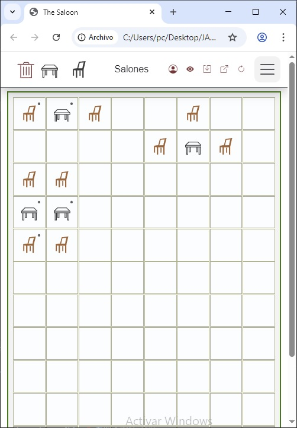

1 dedo
Operativa rápida en movimiento.
Mesala convierte cada móvil en un centro táctico: alerta alergias, peticiones especiales y estado de mesas sin frenar al equipo.
Sin hardware propietario. Funciona en smartphone, tablet y PC.

1 dedo
Operativa rápida en movimiento.
Voz → Acción
Menos clics, más servicio.
0 lock-in
Usa dispositivos del local.
Controla todo el salón en un solo plano sin perder contexto.
Avisos inmediatos para evitar errores críticos en cocina y sala.
Solo información útil en servicio: VIP, alergias y notas clave.
Desde bares de barrio hasta salones con eventos multitudinarios.

Activa Mesala hoy y convierte cada turno intenso en un servicio preciso, seguro y rentable.
Entrar en Prueba Gratis